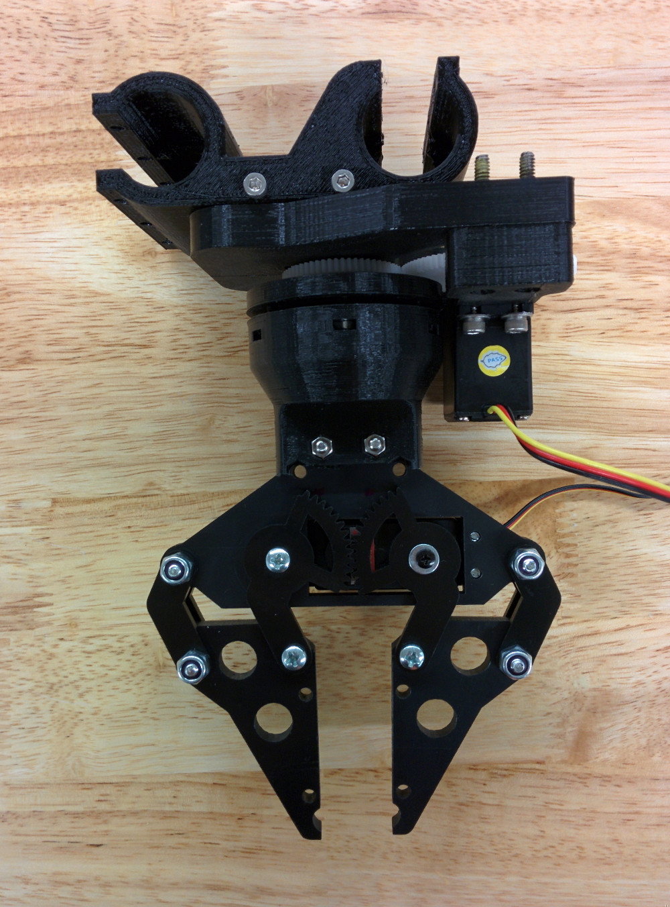

A low cost approach to pick-and-place technology was needed to illustrate the viability of automated arrangement of components during a continuous manufacturing process. It needed to interface with an existing modular fastening point and also needed to interface with the class of electronics and firmware available to the continuous manufacturing system. The resulting design was inexpensive, reliable, and responsive for the pick and place needs of the manufacturing system.
Mechanism design is somewhat of an art and the results can be satisfying. Below is a rather intricate belt tensioning mechanism I developed and tested that allows ease of access while mounted on a complex piece.